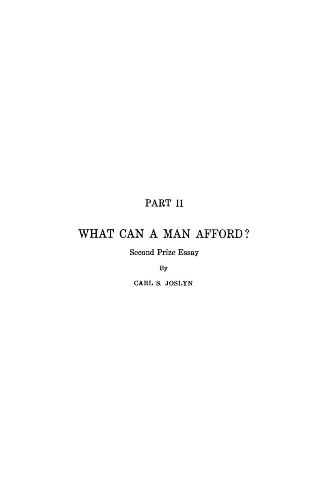

Joslyn, 1921: do orçamento familiar à obrigação moral
Leitura: 8 min
O ensaio que ganhou o segundo prêmio Karelsen usa as leis de Engel e pesquisas oficiais de orçamento para sugerir quanto cada família pode dar à igreja e à caridade, e depois discute por que deveria dar.


Entre 25 de abril e 2 de maio de 1920, o Interchurch World Movement, uma campanha unificada de igrejas americanas, publicou nos principais jornais do país uma tabela de contribuições semanais. Uma pessoa sozinha com renda de US$ 10.000 deveria prometer US$ 10,70 por semana à igreja; uma família de seis com US$ 1.800, alguns centavos. Carl S. Joslyn conclui seu ensaio, segundo colocado no concurso Karelsen, adotando essa tabela como a melhor resposta disponível, mas só depois de mostrar, com orçamentos familiares, por que ela fazia sentido.
O ensaio tem 22 páginas e duas partes. Joslyn distingue de saída duas perguntas: o que um homem pode dar, como item do orçamento com que sustenta a família, e o que deveria dar, como obrigação para com os menos afortunados. A primeira é econômica; a segunda, moral.
Por que não o dízimo?
O ponto de partida é o dízimo, a décima parte da produção da terra que as tribos hebraicas reservavam a fins religiosos e que a Igreja cristã adotou, introduzido na Inglaterra por volta do fim do século VIII. Joslyn observa que há quem ainda o considere praticável, como se um tributo sobre o produto da terra valesse para o produto do trabalho numa sociedade industrial. O exame dos orçamentos familiares, diz, desfaz o engano: nas rendas baixas, as necessidades invadem o que poderia ir para a caridade, e uma cota de 10% empobreceria a família em algum bem indispensável.
A pergunta passa a ser se cabe uma proporção menor e fixa ou uma taxa progressiva. Para responder, o autor estuda os orçamentos em detalhe.
O que dizem os orçamentos?
Joslyn recorre às proposições do estatístico alemão Engel, formuladas cerca de sessenta anos antes: quanto maior a renda, menor a porcentagem gasta com subsistência; roupa, aluguel, combustível e luz tomam porcentagens mais ou menos constantes; e a fatia das despesas diversas cresce com a renda. Ele insiste na diferença entre variação absoluta e proporcional: o gasto com comida sobe com a renda, mas cai como parcela do total.
A pesquisa do Bureau of Labor de 1901, com 11.156 famílias “normais”, confirma em grande parte as leis de Engel, com exceções: nos Estados Unidos, a parcela da roupa quase dobra nas rendas mais altas, sinal, diz o autor, do desejo de viver à altura da renda, ao menos na aparência. Cruzando renda e número de filhos, a parcela das despesas diversas aumenta com a renda e diminui com o tamanho da família, sobretudo a partir de três filhos. Daí a conclusão de que qualquer sugestão de contribuição mínima tem de considerar as duas variáveis.
A caridade cresce com a renda?
Não necessariamente, segundo os dados que Joslyn reúne. No estudo de L. B. More sobre 200 famílias de Nova York, a igreja leva em média 2,5% das despesas diversas, contra 18,7% do dinheiro para gastos pessoais e 14,1% da bebida. Na pesquisa do Bureau of Labor Statistics de 1919, em 92 cidades de 42 estados, com dados de despesas diversas para 30 localidades, a fração dessas despesas dada à igreja e à caridade cai de 4,97% para 2,98% à medida que as despesas diversas passam de 17%–19% para 23%–25% do orçamento. Lazer e férias, ao contrário, mantêm sua fatia.
O autor não vê razão para que a proporção destinada à igreja e à caridade não se mantenha constante, se não crescer. Se famílias com pouca folga podem dar 4% das despesas diversas, as de folga maior podem dar o mesmo ou mais, depois de atendidos seguro, poupança, médico e transporte. E isso, frisa, como possibilidade econômica, não como obrigação moral.
“Uma taxa de 6% ou menos certamente não é demais para pedir a um homem para fins filantrópicos.” (“A rate of 6 per cent or less is surely not too much to ask of a man”)
Que taxas e que isenção propõe?
Joslyn sugere uma progressão: 4% das despesas diversas para famílias em que elas representam de 17% a 19% do total, subindo um ponto a cada faixa até 10% quando passam de 30%. Reconhece que a graduação é em grande parte arbitrária, mas nota que, assim, a contribuição nunca superaria cerca de 5% da renda total.
Para a isenção, usa o orçamento de “saúde e decência” calculado para uma família de cinco em Washington em agosto de 1919: US$ 2.262,47 a preços de mercado, ou US$ 2.015,56 com economia e boa administração doméstica. Em novembro o custo já subira para US$ 2.288,25. Joslyn fixa o ponto de isenção da família de cinco em torno de US$ 2.000 e, dividindo pelas unidades de adulto equivalente, chega a cerca de US$ 700 para um homem sozinho. Como o próprio orçamento oficial inclui uma pequena verba para igrejas, alguma contribuição é razoável mesmo nesse nível.
Por que adotar a tabela das igrejas?
Faltavam dados recentes e detalhados para graduar as taxas por tamanho de família, e Joslyn considera que generalizar além disso seria arriscado. Por isso adota a tabela do Interchurch World Movement, cuja isenção e cujo teto coincidem aproximadamente com os seus. Ela é expressa em contribuições semanais porque, argumenta, todos sabem quanto dão por semana, mas poucos sabem quanto isso soma no ano. Convertida em porcentagens, vai de 0,28% para uma família de seis com US$ 1.800 a 5,35% para uma pessoa sozinha com US$ 10.000. O autor aponta irregularidades na progressão, sinal de que a tabela não foi construída em porcentagens.
A defesa da progressão vem da analogia com o imposto. Das três teorias de tributação, a do benefício e a da capacidade de pagar esbarram, diz ele, na impossibilidade de medir benefícios, capacidade ou sacrifício. Resta a teoria fiscal: o rico paga proporcionalmente mais porque assim se arrecada mais e porque, como mostram os orçamentos, ele sentiria pouco o pedido maior. A diferença, ressalva, é que o imposto é compulsório e a doação deve continuar voluntária.
De onde vem a obrigação de dar?
A tabela mostra o que é economicamente possível, não o que é moralmente obrigatório. Para a segunda parte, Joslyn escolhe como adversário W. G. Sumner, de Yale, autor de What Social Classes Owe to Each Other, para quem um homem livre não tem para com os de sua condição outro dever senão respeito, cortesia e boa vontade. Joslyn contesta a separação de Sumner entre males naturais e males causados pelos homens e propõe outro critério: a maior felicidade do maior número.
Com uma passagem do Utilitarismo de Mill, argumenta que o sentimento de unidade com os outros faz parte da natureza humana e que a felicidade do indivíduo e a da sociedade tendem a coincidir. Se for assim, há obrigação de ajudar quem, por acidente, doença ou abandono, não pode se realizar plenamente. Joslyn concorda com Sumner num ponto: a esmola indiscriminada é um mal. A tabela, diz, existe justamente para canalizar a doação para a caridade organizada.
Na minha leitura
Na minha leitura, o ensaio de Joslyn é um bom exemplo de como usar as leis de Engel como teoria da capacidade contributiva: se a parcela da renda livre de necessidades cresce com a renda e cai com o número de dependentes, uma regra uniforme pesa mais sobre quem tem menos folga. A escolha da teoria fiscal, e não de uma teoria de justiça, é coerente com o material: o autor tem dados sobre o que as famílias gastam, não sobre o que sacrificam.
O limite está na falta de um total. Sem perguntar quanto o conjunto das contribuições precisa somar, a escala responde quanto cada família pode dar, mas não se isso basta. É a diferença entre desenhar uma base e definir uma meta de arrecadação, e Joslyn, por escolha declarada, fica só com a primeira.
Glossário
- Leis de Engel
- proposições do estatístico alemão sobre como a composição do gasto familiar muda com a renda.
- Família normal
- na pesquisa de 1901, casal com marido trabalhando e até cinco filhos com menos de 14 anos, sem outros moradores.
- Despesas diversas
- gastos além de comida, roupa, aluguel, combustível e luz; incluem seguro, lazer, educação, igreja e caridade.
- Teoria fiscal da tributação
- visão de que a progressão se justifica pela conveniência de arrecadar mais, não por um critério de justiça.
- Orçamento de saúde e decência
- cesta mínima calculada pelo Bureau of Labor Statistics em 1919 para uma família de cinco em Washington.
- Interchurch World Movement
- campanha unificada de igrejas americanas que publicou em 1920 uma tabela de contribuições.
Fontes
- Part II: What Can a Man Afford? — Carl S. Joslyn (pp. 97–118). JSTOR · Internet Archive (PDF)
- Edição completa, com os demais artigos: Nº 173 do Arquivo.
Documento em domínio público (EUA, publicado antes de 1931), via JSTOR Early Journal Content e Internet Archive. Resumo e comentário do autor deste site, sem afiliação com a American Economic Association. Encontrou um erro? Escreva: a correção é publicada no próprio texto, com data.
← Os Douglas, 1921: uma escala progressiva para a filantropia ↑ Nº 173 · Quanto um homem pode dar? O concurso Karelsen de 1921